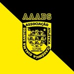

AAADS e Cachacina
Bateria e Atlética da Medicina, responsáveis pela energia, a tradição e o espírito esportivo dos estudantes.
Duas entidades, um só espírito
Ao lado do DAGV, a AAADS e a Cachacina fazem parte do dia a dia de quem estuda Medicina na UFTM — uma cuidando do esporte e da competição, outra do ritmo e da festa. Juntas, elas movimentam a vida estudantil dentro e fora da faculdade.

AAADS
A AAADS é a Associação Atlética Acadêmica Djalma Santos, formada por estudantes de Medicina da UFTM organizados em diferentes diretorias, responsáveis pela gestão esportiva e administrativa da entidade.
A associação organiza treinamentos, infraestrutura e a participação da faculdade em competições universitárias, contemplando modalidades coletivas e individuais — além de, recentemente, iniciar a estruturação de equipes voltadas aos esportes eletrônicos.
Ver história da fundação
Até 1994, as atividades esportivas da então FMTM eram organizadas pelo Departamento de Esportes do próprio DAGV, responsável por estruturar a participação dos estudantes em competições universitárias, incluindo o primeiro Intermed Minas, realizado em Uberlândia. Em 1995, um grupo de acadêmicos — Ricardo Boggio, Ângelo Mattheus, Díminson Braz, José Carlos Costa e Nilo Santos — decidiu criar uma associação atlética independente, seguindo o modelo já existente em outras faculdades de Medicina do país, fundando a Associação Atlética Acadêmica Djalma Santos (AAADS), nome escolhido em homenagem ao atleta uberabense Djalma Santos, bicampeão mundial de futebol em 1958 e 1962.
Uma das primeiras conquistas da associação foi a unificação das duas competições Intermed que existiam em Minas Gerais, com o evento unificado sediado em Uberaba já em 1995 — ano em que a instituição se consagrou campeã geral.
Loja da atlética: Rua dos Andradas, 330 (Campus 1)
Cachacina
A Cachacina é a torcida organizada dos estudantes de Medicina da UFTM, uma das principais expressões culturais e esportivas da comunidade acadêmica do curso, com presença constante nas arquibancadas e nos eventos acadêmicos e esportivos da instituição.
Ao longo dos anos, a Cachacina participa ativamente de competições universitárias, eventos institucionais e celebrações estudantis, mantendo viva a tradição iniciada nas arquibancadas das primeiras Intermeds.
Ver história da fundação
Nas primeiras edições da Intermed, a torcida da então FMTM contava com recursos bastante simples, como buzinas de caminhão e bombas para animar as arquibancadas. Foi na Intermed Minas V, realizada em 1998 em Itajubá (MG), que surgiu a ideia concreta de organizar uma torcida estruturada: um grupo de estudantes — Marcelo Arantes, Miquelante, Fenelon, Anderson, Hermes e Chiquim — criou o bloco "Eu acredito em DuenTes", marcando o início da tradição que originaria a bateria organizada, uma das poucas de Minas Gerais criadas ainda no século XX.
No ano seguinte, em 1999, foi oficialmente fundada a Cachacina. O grupo inicial se reunia frequentemente no Bar da Nilza, próximo ao Campus I, para ensaiar com instrumentos e estruturar a bateria, inicialmente com auxílio de um puxador contratado — função que logo passou a ser exercida pelos próprios integrantes. Desse período também surgiu um dos principais símbolos da torcida: o mascote inspirado no personagem Kenny, de South Park, adaptado nas cores preto e amarelo da instituição. Em 2011, sob a liderança de integrantes da 68ª turma, a bateria passou por uma renovação musical e organizacional que incorporou novos conceitos e tradições, moldando a Cachacina como ela é hoje.
Quer fazer parte?
Acompanhe a AAADS e a Cachacina nas redes sociais para ficar por dentro dos próximos eventos, treinos e ensaios.